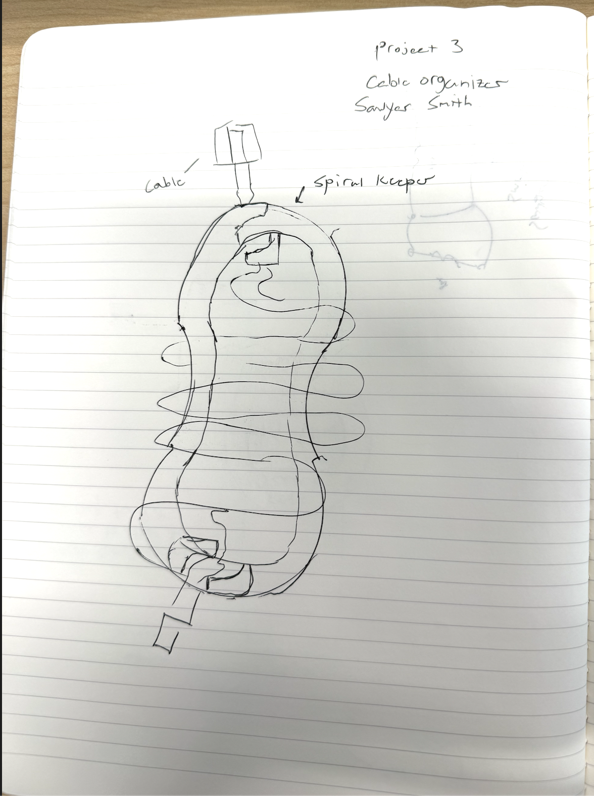

Assignment concept
For 3DP Project 3, I picked cable management as my "better mouse trap" challenge. The established design already works, but there is room to improve how securely cables are held, how quickly they can be inserted and removed, and how clean the part looks on a desk. My direction is to combine strengths from two existing organizer models into one updated version.
This assignment focuses on sketching and product thinking first, so I am using my previous 3D printing experience to keep the design realistic and manufacturable as a single, support-free print.
Who uses this and why
Students, desk workers, gamers, and creators all use cable organizers because loose charging and accessory cables are annoying and easy to lose behind furniture. People want a low-cost part that keeps cables in place without damaging them and still allows quick one-handed access.
What makes this better
- Combine easy snap-in geometry with stronger cable retention.
- Handle slightly different cable diameters more reliably.
- Use smoother edges and cleaner profile for daily use.
- Keep it printable in one piece with no supports required.
Sketch

Does anyone care, and is it marketable?
Yes. This is a small product category, but it solves an everyday pain point for almost anyone with a phone, laptop, or accessories. The concept is marketable as a practical desk accessory that can be sold as a single print, in multi-packs, or as a customizable STL. The value is simplicity: affordable, quick to print, and genuinely useful in real workspaces.
This is a private blog for course notes and reflections. Content is not indexed or publicly listed.